| Tree Layout | ||
|---|---|---|
| Prev | Chapter 5. Automatic Graph Layout | Next |
The yFiles tree layouter family specializes in the layout of tree-structured graphs. The need to visualize directed or undirected trees arises in many application areas, e.g.,
Tree layout is provided in a number of different styles:
In addition, the generic tree layout algorithm provides the basis for a multitude of tree layout schemes.
The tree layout algorithms support sorting the child nodes in a subtree using
a NodeOrderComparator in
conjunction with a data provider that is registered with the graph using the
look-up key
NODE_ORDER_DPKEY
in
conjunction with a data provider that is registered with the graph using the
look-up key
NODE_ORDER_DPKEY .
The following setter method registers custom comparators with a tree layouter.
Except GenericTreeLayouter, this method is available in all tree layouters.
.
The following setter method registers custom comparators with a tree layouter.
Except GenericTreeLayouter, this method is available in all tree layouters.
void setComparator(Comparator sortingComparator) |
|
| Description | Comparator registration. |
Class NodeOrderComparator, when given the outgoing edges of a (sub)tree's root node, uses the target nodes of the edges for querying the data provider. The java.lang.Comparable objects, which the comparator expects in return, are then used to determine the order of the child nodes.
Table 5.54, “Layout Stages” lists the layout stages that can be used with all tree layout algorithms to enhance the layout process. Layout module TreeLayoutModule.java presents the setup of the tree layout algorithms in an application context. It also demonstrates how to set up and use the tree reduction layout stage.
Table 5.54. Layout Stages
| Classname | Description |
|---|---|
| TreeReductionStage |
Adds support for tree-like graphs. |
Class TreeReductionStage is a layout stage that transforms graphs into proper trees. It automatically removes all non-tree edges prior to an algorithm's run and re-inserts them thereafter. When the edges are re-inserted, different routing styles can be applied.
Figure 5.69. Sample layouts produced with the tree layouters defined in package
y.layout.tree
|
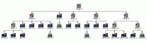
|
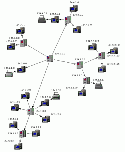
|
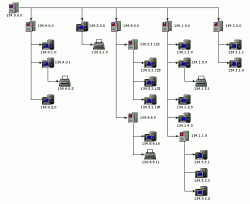
|
|
Using TreeLayouter |
Using BalloonLayouter |
Using HVTreeLayouter |
Class TreeLayouter is a layouter
mainly used for directed trees that have a unique root element.
Starting with the root node the nodes are arranged either from top to bottom,
left to right, right to left, or bottom to top.
The edges of a graph can either be routed as straight lines or in an orthogonal
bus-like fashion.
is a layouter
mainly used for directed trees that have a unique root element.
Starting with the root node the nodes are arranged either from top to bottom,
left to right, right to left, or bottom to top.
The edges of a graph can either be routed as straight lines or in an orthogonal
bus-like fashion.
TreeLayouter knows a number of data provider keys which are used to retrieve supplemental layout data for a graph's elements. The data is bound to the graph by means of a data provider, which is registered using a given look-up key. Table 5.55, “Data provider look-up keys” lists all look-up keys for TreeLayouter.
Binding supplemental layout data to a graph is described in the section called “Providing Supplemental Layout Data”.
Table 5.55. Data provider look-up keys
| Key | Element Type | Value Type | Description |
|---|---|---|---|
| EDGE_LABEL_LAYOUT_KEY |
Edge | LabelLayoutData[] | For each edge an array of LabelLayoutData objects that encode size and preferred placement for all labels of the edge. |
| NODE_LABEL_LAYOUT_KEY |
Node | LabelLayoutData[] | For each node an array of LabelLayoutData objects that encode size and preferred placement for all labels of the node. |
| NODE_HALO_DPKEY |
Node | NodeHalo |
A NodeHalo |
These options configure class TreeLayouter in detail.
| Minimal Layer Distance | |
| API | void setMinimalLayerDistance(double minimalDistance) |
| Description | Determines the minimal distance between parent and child nodes. |
| Minimal Node Distance | |
| API | void setMinimalNodeDistance(double minimalDistance) |
| Description | Determines the minimal distance between the siblings of a node. |
| Layout Orientation | |
| API | void setLayoutOrientation(byte orientation) |
| Description |
Determines the main layout orientation, i.e., the overall orientation for the edges in a layout. This method is inherited from CanonicMultiStageLayouter, the direct superclass of TreeLayouter. The layout algorithm tries to arrange nodes in such a way that all edges point in the main layout direction.
By default, the overall orientation for the edges will be from top to bottom.
The other three layout directions can be set using the constants defined in interface
LayoutOrientation |
The documentation for the other layout options assumes that this default orientation is being used.
Example 5.37. Setting the layout orientation
TreeLayouter tl = new TreeLayouter(); // Use left-to-right main layout direction. tl.setLayoutOrientation(LayoutOrientation.LEFT_TO_RIGHT);
| Port Style | |
| API | void setPortStyle(int portStyle) |
| Description |
Determines the port assignment policy to be used. Ports can be placed
|
| Edge Routing Style | |
| API | void setLayoutStyle(int style) |
| Description | If set, all edges will be routed orthogonally in a bus-like fashion. If not set, the edges will be routed as straight-line segments. |
| Bus Alignment | |
| API | void setBusAlignment(double busAlignment) |
| Description | Determines vertical bus alignment within the space between two layers for edges from a given (root) node to its children that are routed in an orthogonal bus-like fashion. |
| Vertical Alignment | |
| API | void setVerticalAlignment(double verticalAlignment) |
| Description |
Specifies vertical alignment of nodes that are in the same layer. The value for the vertical alignment is interpreted relative to a layer's height, which is determined by the maximum of the node heights. A value of 0.0 means top alignment, 1.0 means bottom alignment. The default value is 0.5, which means center alignment of all nodes in the same layer. |
| Child Placement Policy | |
| API | void setChildPlacementPolicy(byte childPlacementPolicy) |
| Description |
Determines the placement of child nodes in a given tree. Depending on the actual child placement policy, an optimal area utilization can be achieved. The following policies are supported:
In the above context, "stacked" means that leaf nodes at the same parent node are placed non-overlapping below their parent node in a row that extends downwards. This allows to make a graph horizontally more compact. "Left" and "right" indicate where, relative to the center of the parent node, the row is placed. Note that the "stacked" policies only have an effect on subtrees where all children are leaf nodes. |
| Global Layering | |
| API | setEnforceGlobalLayering(boolean enabled) |
| Description | If set, the algorithm ensures that large nodes never span more than their layer. Otherwise, a more compact layout can be achieved when large nodes span two or more layers. This setting is useful, if the hierarchical structure of the tree should be more emphasized. Note that when disabled, the value set for the Vertical Alignment of nodes within their layer is ignored. |
TreeLayouter by default supports node halos as soon as they are declared using the
data provider key NODE_HALO_DPKEY .
During layout calculation, it takes any specified additional paddings around nodes
into consideration and keeps the areas clear of other graph elements.
The labels of a node and its adjacent edge segments are not affected and can still
be placed inside or cross the node's halo.
.
During layout calculation, it takes any specified additional paddings around nodes
into consideration and keeps the areas clear of other graph elements.
The labels of a node and its adjacent edge segments are not affected and can still
be placed inside or cross the node's halo.
Besides the generic labeling support as described in the section called “Generic Labeling”, which is available with all yFiles layout algorithms, TreeLayouter additionally features integrated labeling.
Integrated labeling is available for both node labels and edge labels. They are taken into consideration when determining the positions for the nodes of the tree. With this strategy it is guaranteed that no label will overlap other objects in the diagram. Integrated labeling can be enabled or disabled using the following setter methods:
void setIntegratedEdgeLabelingEnabled(boolean enabled) |
|
| Description | Determines whether integrated labeling is enabled. |
See also the section called “Integrated Labeling”.
Optimal label placement with integrated labeling can be achieved using FreeEdgeLabelModel as the label model for the edges.
As explained in the section called “Label Models”, this edge label model is ideally
suited in combination with integrated labeling and yields the best match for a label
location that is computed by TreeLayouter.
as the label model for the edges.
As explained in the section called “Label Models”, this edge label model is ideally
suited in combination with integrated labeling and yields the best match for a label
location that is computed by TreeLayouter.
Class TreeLayouter supports incremental layout by means of a java.util.Comparator implementation that provides dynamic rearrangement of all child nodes in a given subtree according to their relative coordinates. Based on this scheme, the default comparator is able to incrementally insert new child nodes at optimal positions with respect to already arranged child nodes.
The following setter method registers custom comparator implementations that act globally on the entire tree:
void setComparator(Comparator childComparator) |
|
| Description | Comparator registration. |
Alternatively, class
NodeOrderComparator can be used to
sort the child nodes of a subtree, too.
See also the section called “Sorting Child Nodes”.
can be used to
sort the child nodes of a subtree, too.
See also the section called “Sorting Child Nodes”.
Class BalloonLayouter is a tree
layouter that positions the subtrees rooted at a node in a radial fashion
around that node.
It is ideally suited for huge trees (say, 10,000 nodes) since it computes fast
layouts that are quite compact.
is a tree
layouter that positions the subtrees rooted at a node in a radial fashion
around that node.
It is ideally suited for huge trees (say, 10,000 nodes) since it computes fast
layouts that are quite compact.
Class BalloonLayouter knows a number of data provider keys which are used to retrieve supplemental layout data for a graph's elements. The data is bound to the graph by means of a data provider, which is registered using a given look-up key. Table 5.56, “Data provider look-up keys” lists all look-up keys for BalloonLayouter.
Binding supplemental layout data to a graph is described in the section called “Providing Supplemental Layout Data”.
Table 5.56. Data provider look-up keys
| Key | Element Type | Value Type | Description |
|---|---|---|---|
| INTERLEAVED_NODES_DPKEY |
Node | boolean | For each node a boolean value indicating whether interleaved child node placement should be enabled. |
| NODE_HALO_DPKEY |
Node | NodeHalo |
A NodeHalo |
These options configure class BalloonLayouter in detail.
| Root Node Policy | |
| API | void setRootNodePolicy(byte policy) |
| Description |
Determines which node should be used as root of the tree. Available options are:
|
| Preferred Root Wedge | |
| API | void setPreferredRootWedge(int wedgeAngle) |
| Description | This setting determines the angular range of the sector that will be reserved around the root node of the graph to accommodate the attached subtrees. |
| Preferred Child Wedge | |
| API | void setPreferredChildWedge(int wedgeAngle) |
| Description |
This setting determines the angular range of the sector that will be reserved for the children of a root node. The possible angular range lies between 1 and 359. The remaining angular range (360 minus x) will be automatically used to accommodate the edge that connects to the root node. The smaller the chosen value, the more the impression that the nodes drive away from their root nodes and the center of the graph. Generally speaking, the compactness of the layout will decrease with smaller values. Very small values will lead to layouts that consume a lot of space. |
| Minimal Edge Length | |
| API | void setMinimalEdgeLength(int minimalLength) |
| Description | Determines the minimal length of an edge. The smaller the chosen value the more compact the resulting layout. |
| Compactness Factor | |
| API | void setCompactnessFactor(double factor) |
| Description | This parameter influences the length of the tree edges as it is computed by the layout algorithm. The smaller the compactness factor, the shorter the tree-edges and the more compact the overall layout. The bigger the compactness factor, the more difficult, and hence slower, the layout computation. |
| Interleaved Child Node Placement | |
| API | void setInterleavedMode(byte policy) |
| Description |
Child nodes at the same parent tree node can be placed in an interleaving fashion. Especially if some tree node has many child nodes and if they have similar sizes, the diagram can become more compact. Available options are:
|
Figure 5.71. Effects of interleaved child node placement
|
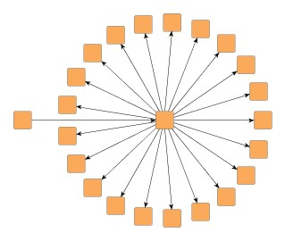
|
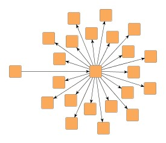
|
| Tree layout by BalloonLayouter... | ... with interleaved child node placement enabled. |
If there is enough space to place the child nodes of a tree node without interleaving, they will be placed normally, even when "Interleaved Child Node Placement" is enabled.
| Child Node Alignment | |
| API | void setChildAlignmentPolicy(byte policy) |
| Description |
Determines the policy for aligning the child nodes at a tree node. Available options are:
|
Figure 5.72. Child node alignment policies
|
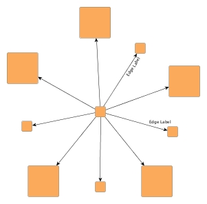
|
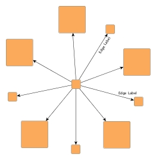
|
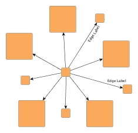
|
| Child node aligment plain... | ... same center... | ... compact. |
| Straighten Chains | |
| API | void setChainStraighteningModeEnabled(boolean enabled) |
| Description | If activated, all nodes in a chain will be placed on a straight line. This may lead to smoother and more symmetric layouts. By default, this feature is turned off. |
| Allow Overlaps | |
| API | void setAllowOverlaps(boolean allowOverlaps) |
| Description | If activated, this option further increases compactness of the resulting layout, but potentially introduces slight node overlaps. |
| Consider Node Labels | |
| API | void setConsiderNodeLabelsEnabled(boolean enabled) |
| Description | Enables node label-aware layout calculation. |
BalloonLayouter by default supports node halos as soon as they are declared using
the data provider key NODE_HALO_DPKEY .
It considers any specified additional paddings around nodes, however, due to the
straight-line routing of the edges, they can cross through these areas in the resulting
diagram.
Also, node halo overlaps may occur if option "Allow Overlaps" is activated.
.
It considers any specified additional paddings around nodes, however, due to the
straight-line routing of the edges, they can cross through these areas in the resulting
diagram.
Also, node halo overlaps may occur if option "Allow Overlaps" is activated.
Besides the generic labeling support as described in the section called “Generic Labeling”, which is available with all yFiles layout algorithms, BalloonLayouter additionally features integrated labeling.
Integrated labeling is available for both node labels and edge labels. They are taken into consideration when determining the positions for the nodes of the tree. With this strategy it is guaranteed that no label will overlap other objects in the diagram. Integrated labeling can be enabled or disabled using the following setter methods:
void setIntegratedEdgeLabelingEnabled(boolean enabled) |
|
| Description | Determines whether integrated labeling is enabled. |
See also the section called “Integrated Labeling”.
Enabling the integrated node labeling support of class BalloonLayouter means that each node label will be placed and arranged by BalloonLayouter such that there are no overlaps of node labels with each other or with graph elements (other than their respective node).
BalloonLayouter supports different node labeling policies that can be configured
using the
setNodeLabelingPolicy(byte) method.
The following policies are available:
method.
The following policies are available:
NODE_LABELING_HORIZONTAL |
|
| Description | Each node label will be placed at the center of its node, with horizontal orientation. Multiple node labels will be placed center aligned and stacked. |
NODE_LABELING_RAYLIKE |
|
| Description | Node labels of leaf nodes and node labels of nodes having exactly one successor (thus possibly forming a chain) will be oriented ray-like, i.e. with the same orientation as their node's incoming edge. Additionally, the node labels of leaf nodes will be placed outside of their node. Multiple, ray-like oriented node labels will be left aligned. Node labels of nodes having more than one successor will be placed at the center of their node, with horizontal orientation. Also, node labels that do not use a "free" label model, will be placed this way. See also below. This is the default setting. |
NODE_LABELING_MIXED |
|
| Description | Node labels of leaf nodes will be oriented ray-like, i.e. with the same orientation as their node's incoming edge. Additionally, these node labels will be placed outside of their node. Other node labels will be placed at the center of their node, with horizontal orientation. Also, node labels that do not use a "free" label model, will be placed this way. See also below. |
Note that ray-like oriented node labels are only supported by integrated labeling
for node labels that use a "free" label model, e.g.,
FreeNodeLabelModel .
.
Figure 5.73. Results with different Node Labeling policies
|
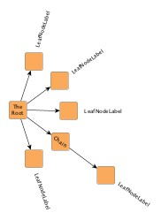
|
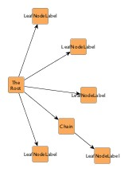
|
| NODE_LABELING_RAYLIKE | NODE_LABELING_HORIZONTAL |
Enabling the integrated edge labeling support of class BalloonLayouter instructs the algorithm to find optimal placements for edge labels such that there are no overlaps of edge labels with each other or with graph elements. In addition, the edge labels are also oriented and arranged by BalloonLayouter.
Figure 5.74. Edge labeling
|
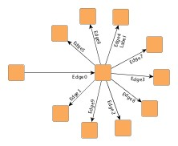
|
| Edge label placement where labels are configured with preferred placement at the target node and on the right side of the edge. |
Note that edge label placement configurations by means of the PreferredPlacementDescriptor are currently only partially supported by the integrated edge labeling of BalloonLayouter. Placement of the edge label at a specified preferred side of the edge can be guaranteed. Preferred placement of the edge label at the source node or target node, however, cannot be guaranteed entirely.
Optimal label placement with integrated edge labeling can be achieved using
FreeEdgeLabelModel as the label model for the edge labels.
As explained in the section called “Label Models”, this edge label model is ideally
suited in combination with integrated edge labeling and yields the best match for
a label location that is computed by BalloonLayouter.
as the label model for the edge labels.
As explained in the section called “Label Models”, this edge label model is ideally
suited in combination with integrated edge labeling and yields the best match for
a label location that is computed by BalloonLayouter.
BalloonLayouter can be set to "layout from sketch" mode to provide support for incremental layout. In this mode, a diagram's current drawing is taken into account when calculating a new layout. The following setter method enables "layout from sketch" mode:
void setFromSketchModeEnabled(boolean fromSketchModeEnabled) |
|
| Description | Enables "layout from sketch" mode. |
Class HVTreeLayouter allows to
layout a tree such that each subtree rooted at a node can either have a
horizontal or vertical layout.
For each node the layout orientation of its child nodes can be specified using
the data provider look-up key
SUBTREE_ORIENTATION
allows to
layout a tree such that each subtree rooted at a node can either have a
horizontal or vertical layout.
For each node the layout orientation of its child nodes can be specified using
the data provider look-up key
SUBTREE_ORIENTATION .
.
Class HVTreeLayouter knows a number of data provider keys which are used to retrieve supplemental layout data for a graph's elements. The data is bound to the graph by means of a data provider, which is registered using a given look-up key. Table 5.57, “Data provider look-up keys” lists all look-up keys for HVTreeLayouter.
Binding supplemental layout data to a graph is described in the section called “Providing Supplemental Layout Data”.
Table 5.57. Data provider look-up keys
| Key | Element Type | Value Type | Description |
|---|---|---|---|
| SUBTREE_ORIENTATION |
Node | Object |
For each root node either
HORIZONTAL_SUBTREE |
These options configure class HVTreeLayouter in detail.
| Horizontal Space | |
| API | void setHorizontalSpace(double space) |
| Description | The minimal horizontal distance between adjacent nodes. |
| Vertical Space | |
| API | void setVerticalSpace(double space) |
| Description | The minimal vertical distance between adjacent nodes. |
Class HVTreeLayouter allows to arrange subtrees either horizontally or
vertically.
To specify the desired placement, a data provider holding such supplemental
layout data can be bound to the graph.
The data provider is expected to be registered with the graph using key
SUBTREE_ORIENTATION .
Note that in the absence of the data provider horizontal placement is chosen.
.
Note that in the absence of the data provider horizontal placement is chosen.
Class ARTreeLayouter generates
compact orthogonal tree drawings.
As a layout constraint a preferred aspect ratio (relation of width to height)
can be given.
This is especially useful when the graph should fit perfectly on a page of
given size.
generates
compact orthogonal tree drawings.
As a layout constraint a preferred aspect ratio (relation of width to height)
can be given.
This is especially useful when the graph should fit perfectly on a page of
given size.
Class ARTreeLayouter knows a number of data provider keys which are used to retrieve supplemental layout data for a graph's elements. The data is bound to the graph by means of a data provider, which is registered using a given look-up key. Table 5.58, “Data provider look-up keys” lists all look-up keys for ARTreeLayouter.
Binding supplemental layout data to a graph is described in the section called “Providing Supplemental Layout Data”.
Table 5.58. Data provider look-up keys
| Key | Element Type | Value Type | Description |
|---|---|---|---|
| RATIO |
Node | Number | For each root node a Number object encapsulating a double value that indicates the subtree's aspect ratio. |
| ROOT_PLACEMENT |
Node | Object |
For each root node one of
PLACEMENT_TOP |
| ROUTING_POLICY |
Node | Object |
For each root node either
ROUTING_HORIZONTAL |
These options configure class ARTreeLayouter in detail.
| Horizontal Space | |
| API | void setHorizontalSpace(double space) |
| Description | The minimal horizontal distance between adjacent nodes. |
| Vertical Space | |
| API | void setVerticalSpace(double space) |
| Description | The minimal vertical distance between adjacent nodes. |
| Bend Distance | |
| API | void setBendDistance(double distance) |
| Description | Determines the preferred minimal distance between each two bends of an edge and between the first and last edges and the corresponding ports. |
| Preferred Aspect Ratio | |
| API | void setAspectRatio(double aspectRatio) |
| Description | Determines the preferred aspect ratio (width by height) of the resulting layout. This option allows for creating layouts which, e.g., fit perfectly onto the page of a book. |
|
Copyright ©2004-2015, yWorks GmbH. All rights reserved. |